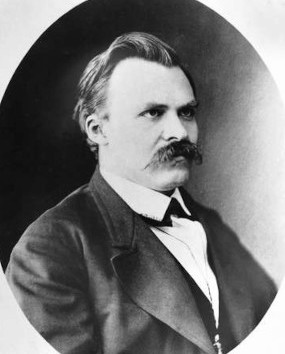

CV

Summary
I want to change my current job and become a programmer. One of my strong points is probably optimism, which allows me to believe that everything will work out and not give up. Unfortunately, I am still just learning and work experience that I could not have, but I can say that I have the desire and ability to learn quickly and learn new things.
Skills
During preparation for the course:
- received basic knowledge of the basics of OOP and basic data structures and their organization
- learned how to implement simple algorithms in the Javascript language and studied basic sorting and search algorithms.
- Learned the basics of working with the command line IDE Visual studio code and the basics of working with GIT
Сode examples
function filterRange(arr, a, b) {
return arr.filter(item => (a <= item && item <= b));
}
let arr = [5, 3, 8, 1];
let filtered = filterRange(arr, 1, 4);
alert( filtered );
alert( arr );
Education
Graduated from Brest State University with a degree in technical maintenance of vehicles
English
level of English at the pre-intermediate level